Shoutouts
Happy birthday to “This adds up”! You’re a really friendly guy and I quite enjoy talking with you at Midnight runners and I’m glad we’re becoming friends outside it as well!
Monday
After my shift of routing the requests I went to run club where I was pleasantly surprised to find “This American doll seller”. Always great to have more friends at the run! “Bleaching to the choir” if you’re reading this next time follow in your roommates example! After the run we went to a bar where I caught up with. “Spaced out”. We were talking with some people and learned about a sport called Gaelic football which is a hybrid between basketball, soccer, and rugby. It’s strictly an amateur sport so players don’t get paid but it’s popular enough to fill up a 19,000 person stadium which is wild.
Tuesday
Once I satisfied the shareholders I went to a board game night I used to go to a lot last year. Typically board game nights are more of a winter activity so now the the suns down boards are up or so they say. Turns out “The Juggler’s” roommate was also here so I had a great time catching up with him. We mainly played a cooperative board game in which five of us worked together to try and survive WWI through the time honored tradition of playing cards to get rid of the three great villains: gas, bullets, and whistles. It was a partial information cooperative game where we all knew some things but we couldn’t fully share what we knew. For anyone familiar with games like Hanabi it’s somewhat like that. Each time we lost though, WWI was too much man.
Wednesday
Oh man, the rain was terrible today. Zaza the rain God tried her hardest to keep me from walking to my tryst with the tokens and regrettably she succeeded. Regrettably I had to take the bus and both skip almond butter toast and lower my step count … sad!
I found out in the middle of the tryst that my main plan, Midnight Runners, was cancelled because of Zaza's continued onslaught (do you know what my stocks and SF had in common this week? They both ended up under water). I looked for different things to do and stumbled upon an event where people debate issues salon style. I had never been to an event like that and was curious to see what it may have been like. I get there only to find the door locked and my dreams of arguing about whether France should ban burkas dashed.
Instead I get dinner with “The Fisherwoman” who by chance also had her plans cancelled so we catch up for a while which was quite nice and she is now the first person to see my apartment with all its glorious wall art.
Thursday
While I was in the middle of combing the Cerebras I realized Anthropic IPOd today. In honor of that I decided to buy a share and add this to my LinkedIn
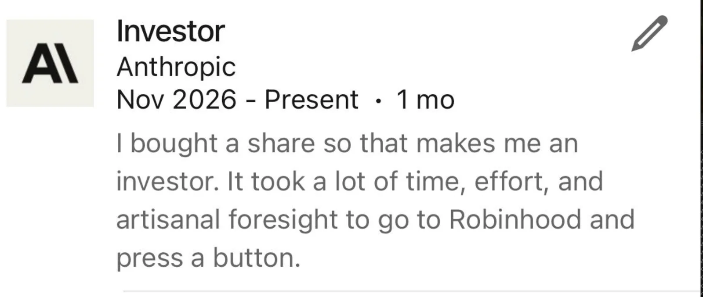
After the Cerebras was combed I got dinner with “La Tacqueria Royalty,” "The Enabler,” “The Dentist,” and one of “The Dentist’s” friends. We went to a ramen place which had a surprising specialization in beef. For example they had beef karaage and beef katsu curry which was quite intriguing.
Unfortunately I also learned why they don’t typically do it. I didn’t find the beef karaage to be as flavorful or crispy as typical chicken karaage and the beef katsu left something to be desired. But the company of course was great. I got to learn more about “The Enabler” and “La Tacqueria royalty’s” trip to Spain, debate the merits of fictional power systems with “La Tacqueria royalty” and learn about a TV show called the beef which follows some people that got into an argument which escalated throughout the season. Between this and the trivia a couple weeks ago I realize that I’m not particularly dialed into pop culture. I think I need to hang out with this group more so I can learn what’s in the zeitgeist.
After dinner I went to bar night with “The Philosopher,” “That’s nuts,” “The Mosher,” “The Twitch streamer,” and “The Awepartment”. “That’s nuts” told me about her excellent birthday gift to her boyfriend of putting Mamdani stickers on his old phone case and getting him a new phone case.
Friday-Saturday
I took the day off the grind today because I have a bunch of PTO so I figured why not use some of it.
In typical Humza fashion I went on a big walk. One of the highlights was a Chinese travel agency I stumbled across called WJ Global 文景假期 旧金山Clement店. For one thing I was intrigued because I didn’t realize physical travel agencies actually existed in this day and age; the last one I saw was in Berkeley but it was always closed leading me to think it was a front for money laundering. I walked in there and quickly learned they weren’t able to serve my kind, specifically those that spoke English. One of the agents there said she had some English guide but couldn’t find it amidst the sea of Chinese ones. She gave me a business card for their website for more English information so who knows, maybe I could book my next trip through here.
As a smaller highlight, I went to the USF Lone Mountain campus for the first time which was kinda nice . Not breathtaking or worth going out of the way for, but if you’re in the area they do have a nice view.
I also did a trash pickup in the Fillmore / Pac Heights area. Because this was in the middle of the day there weren’t any young people besides me there so the vibes were different from usual. I picked up trash by myself for an hour and a half which was actually pretty relaxing. It struck just the right balance of having something to do to keep me occupied while not being so stimulating that I couldn’t really think about my thoughts. For anyone who does trash pickup but struggles to find an activity they can do to relax I quite recommend a solo trash pickup.
Later I got dinner at Terra Cotta Warrior with “The Philosopher”. I was able to eat a spicy lamb burger just fine which I hope will break the misconception some people hold that I don’t have a spice tolerance. From there I went to some bars r with “The Awepartment” and one of his other friends. At the second “The Philosopher” was trying to get me to increase my tolerance for non alcoholic beers. I had a couple of Stellas, the first one I was able to put down albeit with some clear faces that gave “This guy is getting kicked in the spleen by some angry wombats and is clearly not enjoying it” vibes. For the second I was challenged to sip it rather than chug it so I don’t look as put off which worked from what I was told. In the middle of that I learned that it’s considered a faux pas to drink beer with a straw. Why? I don’t know. People have all sorts of arbitrary rules and apparently if I want to drink a non alcoholic beer I can’t do it with a straw. Well I already break a bunch of social norms anyway and I can’t say I particularly care about this one so we’ll just add it to the list.
We then go to get a pizza at a place that does vegan cheese and it was pretty reasonable.After eating the pizza and talking about life we learn that “The Awepartment” has to get up at 4:45 AM to leave for a ski trip. At this point it's 1:30 AM and “The Philosopher” and I decide to commit to a bit of being at his place at 4:30 AM for some coffee. I go to “The Philosopher’s” place and crash on his couch for 2 hours before getting up to go to “The Awepartment’s” at the designated time. We hang out there for an hour and a half and then I walk “The Philosopher” home and head home myself.
By the time I get back to my place it's 6:30AM. I get a couple hours of sleep and then I go to trash pickup with “Joyous laugh,” “Spaced out,” “Let me give you a call on the world’s smallest phone,” “The Politician,” “Bleaching to the choir,” “This American doll seller,” and some others.
After the pickup I walk around a bit with “Spaced out” and we go into a bookstore and she offers to buy me a book which is super nice! I wind up deciding on this one
because I thought it would be a fun vibe! As it turns out I’m going to a reading rave later tonight so this will come in handy.
Afterwards I go to a birthday party for “This adds up”! Since he’s a runner he decided to do an 18 mile run that spells out 29 (his age) in Strava art. I caught them in Lower Haight about 4.5 miles into their run and run with them for about a mile and a half before unfortunately tripping and scraping both my knees and twisting my left elbow a bit. Thankfully as far as falls go it certainly wasn’t the worst since my head was completely fine but moving my legs at all caused quite a bit of pain and I was bleeding so I had to stop running.
Thankfully a couple folks decided to take a break and get lunch with me at Niku Butcher Shop that has a really good Wagyu burger which by chance was on my list of places I wanted to try so it wound up working out. Seriously thanks to both of you, you don’t get this newsletter but I do want to make it known that it made me quite happy.
I go home, shower, and take a half hour nap and then wander around a bit more. I would have liked to join back up with “This adds up” for more of the run but I realized that since I still can’t run it would make more sense to join them at the final stop of the night Zeitgeist.
I show up there in time for everyone to finish and I catch up with everyone. “The Fisherwoman” also joins us part way through. I felt bad about bailing part way through but it was great to chat with everyone.
Sunday
My day started with trash pickup with “Let me give you a call on the world’s smallest phone,” “Joyous laugh,” “This American doll seller,” “Hell yeah,” “The Notetaker” and many others.
After the pickup I head to Oakland for a Christmas party hosted by “The Foxy lady” and “Not Misinformed”. It’s the first time that “The Foxy lady” ever had a Christmas tree so to celebrate a bunch of us came over and crafted some ornaments for it. I’m not very good at paper clip art but I contributed in my own way
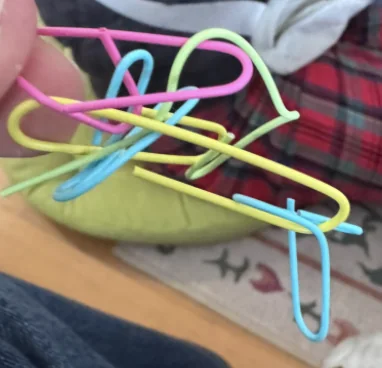
I think they call this abstract art. I do make a somewhat heart shaped thing out of felt with some beads sewn into it but unfortunately I didn’t get a picture. Thanks to “The Foxy lady” for giving me a basic sewing lesson!
At this party I also had my first ever hot chocolate. It tasted just like melted chocolate which in retrospect would be exactly what you expect it to taste like but since I never had it I never stopped to think what it would actually taste like. Thanks again to “The Foxy lady” for making a vegan hot chocolate for me.
Then I go to juggling club at the Circus Center to do some juggling practice. I’m still struggling to get 3 balls but after talking with someone I realized I was trying to build on a shaky foundation. While I can technically do 2 balls the way I was doing it was quite off. I was trying to move my arms a bunch and really chase after the two balls. Instead I should take it slow and imagine a box above my head and throw each ball towards the diagonal corner of the box slowly and not being afraid to take my time.
I go back and refine some of the prerequisites, doing 1 ball and 2 balls in a slower and more controlled way. Afterwards he advises me to try to get the timing of 3 balls without actually catching them so I can get the flow right, and once I do that I can start to catch them one by one. I leave there a bit more solid in some fundamentals but still with the 3 ball goal squarely ahead of me. They have this juggling club every week and I want to go more to see what other kinds of advice I can get!!
As an aside at the club I hear some older people talking about theoretical computer science problems and how they are changing with LLMs. I chime in and try to debate them a bit on how P vs NP may not actually be that useful in practice because polynomial vs exponential isn’t a perfect measure of algorithmic efficiency depending on the input size but we don't really get much of anywhere.
Personal training progress for the week
The dot plots below show every exercise logged through 11/18/2026; later dates are excluded. The x-axis is time, the y-axis is logged weight, and dot size represents reps or logged time. Bodyweight sets appear on the BW baseline.

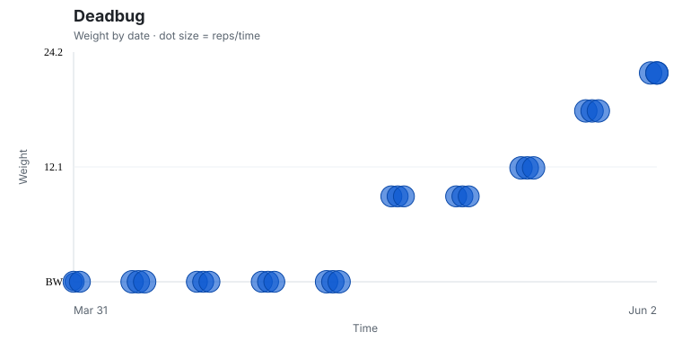
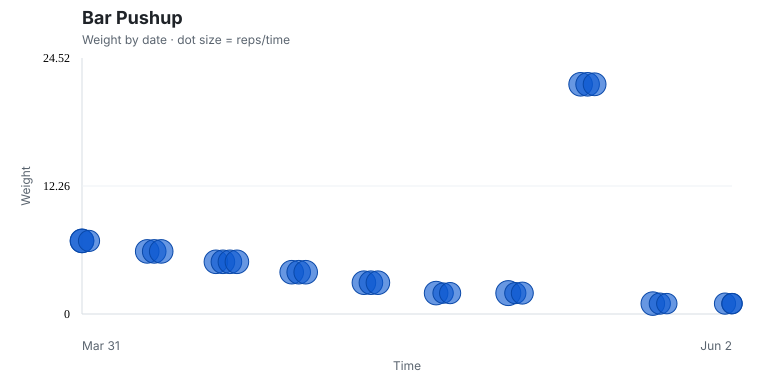
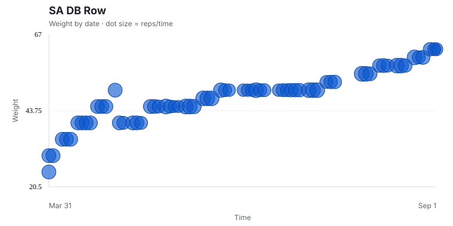

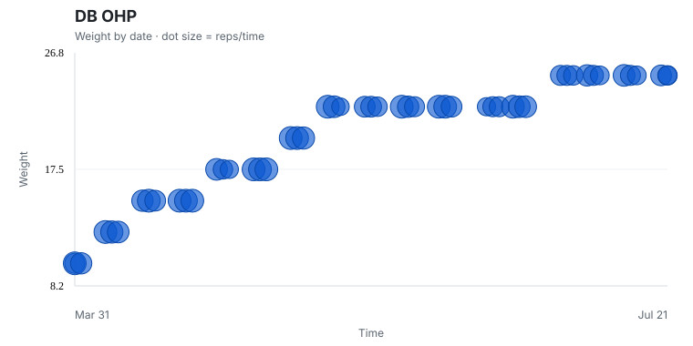


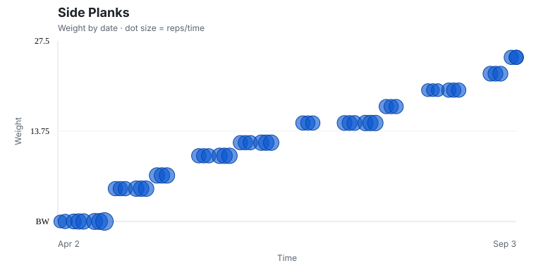

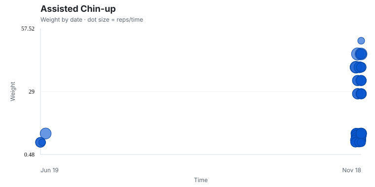
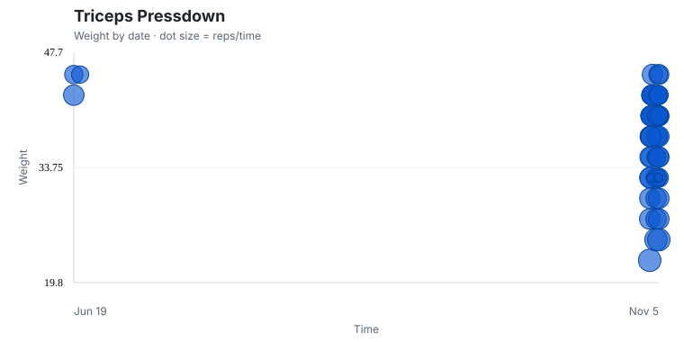


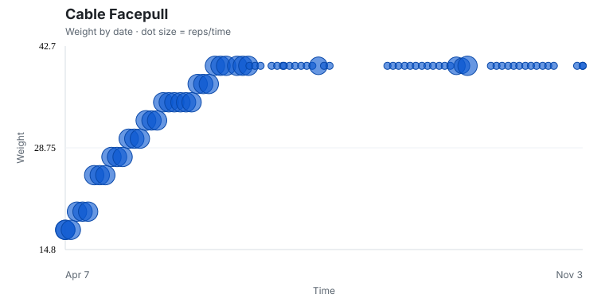

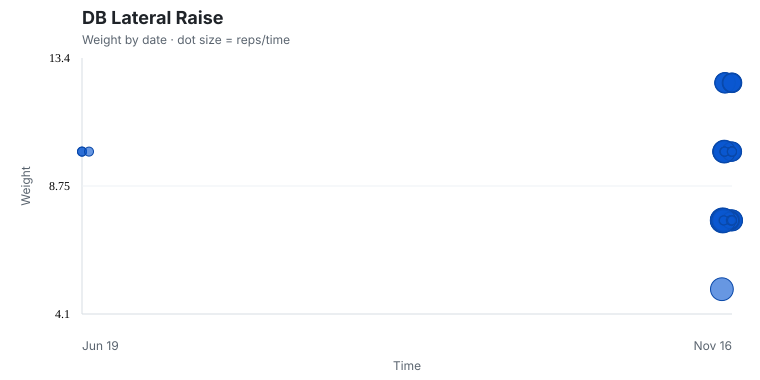
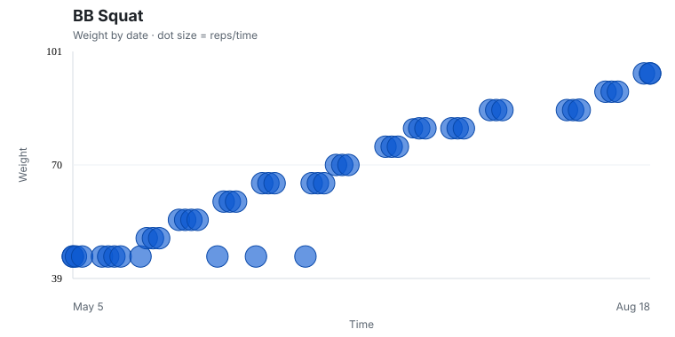
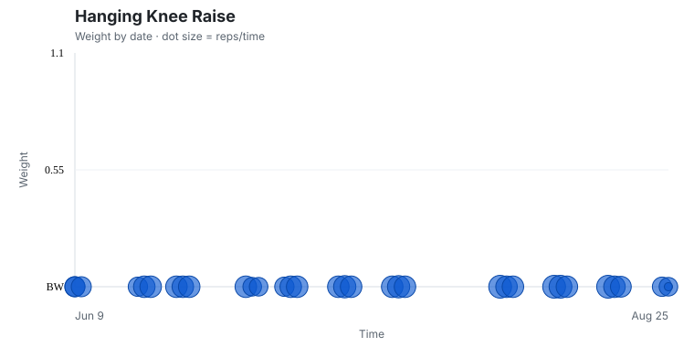
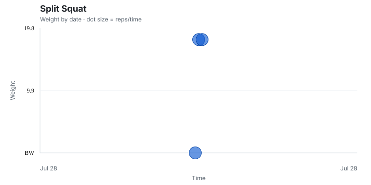
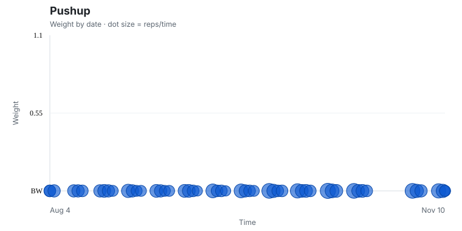

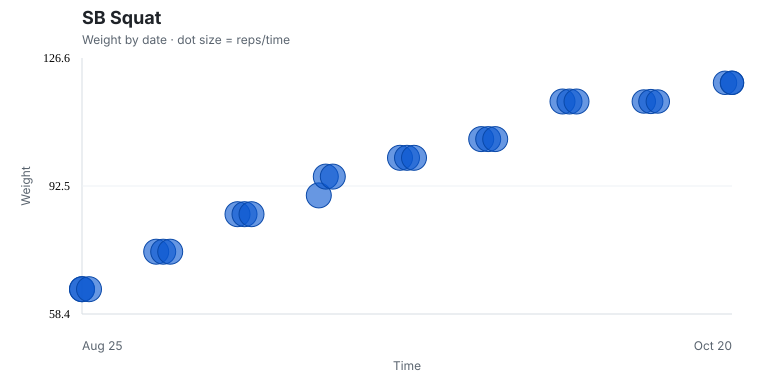
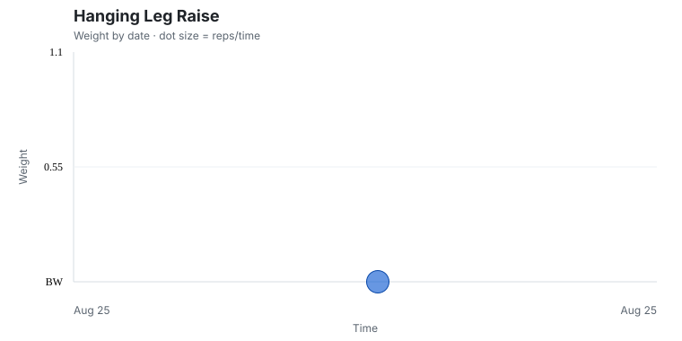


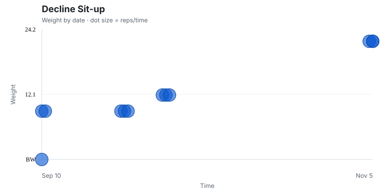

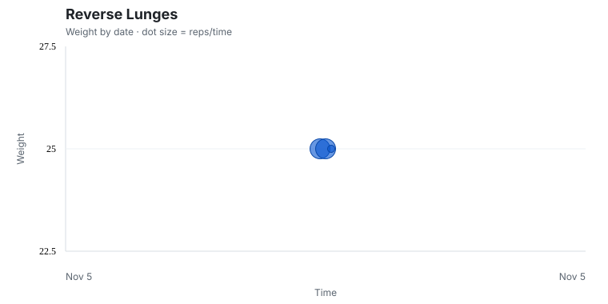